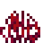
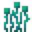

ブロックのリソースに関することをまとめていきたいと思います。
普通にテクスチャを変えるだけなら、画像ファイルを差し替えるだけでできます。場所は「(リソース)/textures/blocks」です。テンプレートから変更する場合、変更に関係ないファイルはすべて消してしまいましょう。
ここで気をつけてほしいのは、.tgaファイルの扱い方です。透明な部分を含むテクスチャファイルにはときどき拡張子が「.png」ではなく「.tga」であることがあります。このままでは多くのペイントツールは扱えないのでこの場合は、名前から「tga」を「png」に書き換えるのではなく、コンバータを使ってpngに変換してからテクスチャを書き換え、新しく画像を用意するときでもpngからtgaに変換して追加しましょう。 コンバータについては、新しくソフトやアプリを用意する必要はなく、「tga png 変換」などと検索すればオンラインで変換してくれるものが出てきます。
そもそも、ブロックのリソースはこのように紐付けされています。
少しこれから説明する内容のネタバレになりますが、例えば草ブロックなら、blocks.jsonで上面は「grass_top」、側面は「grass_side」、下面は「grass_bottom」というterrainIDを参照します。そして、それぞれのterrainIDにあたるテクスチャをterrain_texture.jsonで参照します。
なぜ二段階に分けたのかはわたしにもわかりません。
terrain_texture.jsonでは主に「
このjsonの大まかな作りはこのようになっています。
{
"num_mip_levels" : 4,
"padding" : 8,
"resource_pack_name" : "vanilla",
"texture_data" : {
"acacia_planks" : {
"textures" : "textures/blocks/planks_acacia"
},
...
}
}
上部にある「num_mip_levels」「padding」「resource_pack_name」に変更を加える必要はありません。
上の例では、「acacia_planks」がterrainIDとなり、そのIDに対してテクスチャの
在りかを示すファイルパスは自由ですが、基本的にブロックのテクスチャは「textures/blocks/○○」に置いてあると思うのですべて「textures/blocks/○○」という指定になると思います。
同じ木材ブロックでも「データ値」が異なれば見た目の種類(樫/白樺/トウヒ/...etc)が変わります。つまり、同じブロックに対して複数のパターンのテクスチャが用意されているということです。
※もともとデータ値の概念があるブロックでないと適用されません。つまり、もともとデータ値がないブロックに複数のテクスチャを指定しても、コマンドでデータ値を変えて出したときにテクスチャは変わりません。
それを実現するには、一つのterrainIDに対して複数のテクスチャを参照してあげます。
"(terrainID)": {
"textures": [
"(テクスチャ1)",
"(テクスチャ2)",
"(テクスチャ3)",
...
]
}バニラのブロックにはありませんが、置く場所によってランダムでテクスチャが決まるということもできます。
"(terrainID)": {
"textures": {
"variations": [
{ "path": "(テクスチャ1)" },
{ "path": "(テクスチャ2)" },
{ "path": "(テクスチャ3)" },
...
]
}
}"(terrainID)": {
"textures": {
"overlay_color": "(カラーコード)",
"path": "(テクスチャ)"
}
}"(terrainID)": {
"textures": {
"tint_color": "(カラーコード)",
"path": "(テクスチャ)"
}
}
こちらではブロックのテクスチャだけでなく、主にブロックのリソース全般に対して紐付けをします。ほとんどは見た目に関する設定ですが、そのブロックに関するサウンドも紐付けするのはblocks.jsonの仕事です。
大まかな形は以下のようになっています。
{
"acacia_button" : {
"sound" : "wood",
"textures" : "acacia_planks"
},
...
}
上の例で「acacia_button」となっている部分にはブロックのIDを書きます。バニラのブロックはネームスペース(minecraft:)がなくてもコマンドで出せるように省略できますが、オリジナルのブロックはネームスペースが必須となります。
「sound」でサウンドの種類を指定します。選べるのは以下の表の通り。ここでは「壊したとき」「掘っているとき」「置いたとき」「落ちてきたとき」「上でジャンプしたとき」「降りてきたとき」「上を歩くとき」の音を決めます。
sounds.jsonを見るとオリジナルのサウンドも追加できそうですが、現状できません。
| サウンドの種類 | 備考 |
|---|---|
| ancient_debris | 古代のがれき |
| anvil | 金床 |
| bamboo | 竹 |
| bamboo_sapling | たけのこ |
| basalt | 玄武岩 |
| bone_block | 骨ブロック |
| chain | チェーン |
| cloth | ウール |
| coral | サンゴ |
| fungus | 深紅のキノコ、歪んだキノコ |
| glass | ガラス |
| grass | 草ブロック |
| gravel | 砂利、土 |
| honey_block | ハチミツブロック |
| itemframe | 額縁 |
| ladder | はしご |
| lantern | ランタン |
| lodestone | ロードストーン |
| metal | 鉄ブロック、コマンドブロック |
| nether_brick | ネザーレンガブロック |
| nether_gold_ore | ネザー金鉱石 |
| nether_sprouts | ネザースプラウト |
| nether_wart | ネザーウォート |
| netherite | ネザライトブロック |
| netherrack | ネザーラック |
| normal | デフォルト(石) |
| nylium | ナイリウム |
| roots | 根  |
| sand | 砂 |
| scaffolding | 足場ブロック |
| shroomlight | シュルームライト |
| slime | スライムブロック |
| snow | 雪 |
| soul_sand | ソウルサンド |
| soul_soil | ソウルソイル |
| stem | 深紅の茎、歪んだ茎 |
| stone | 石 |
| sweet_berry_bush | スイートベリーの低木 |
| turtle_egg | カメの卵 |
| vines | ツタ |
| wood | 木 |
「textures」ではterrainIDを指定します。
作業台など、面によってテクスチャが異なるようにする場合を紹介します。
ここで注意してほしいのは、ディスペンサや原木などプレイヤーの向きなどによって「置く向き」を変えられるブロックに関しては、もともとその機能が備わっているブロックでないとできません。例えば、土ブロックのテクスチャを原木のテクスチャに変えて、ブロックを置いたときに横か縦か決められるようにはできません。
以下は古代のがれきと玄武岩の場合です。
"ancient_debris": {
"sound" : "ancient_debris",
"textures": {
"down": "ancient_debris_top",
"east": "ancient_debris_side",
"north": "ancient_debris_side",
"south": "ancient_debris_side",
"up": "ancient_debris_top",
"west": "ancient_debris_side"
}
}"basalt": {
"sound": "basalt",
"textures": {
"down": "basalt_top",
"side": "basalt_side",
"up": "basalt_top"
}
}それぞれこのように割り当てられています。
| プロパティ名 | 備考 |
|---|---|
| down | 下面 |
| east | 東面 |
| north | 北面 |
| side | 東西南北面まとめて指定 この場合eastやnorthなどは書く必要はありません |
| south | 南面 |
| up | 上面 |
| west | 西面 |
以下はサンゴブロックの例です。
面ごとにテクスチャを指定することもできます。
"coral": {
"carried_textures": "coral",
"sound": "stone",
"textures": "coral"
}
以下は粘土の例です。
面ごとに指定することもできます。
"clay": {
"isotropic" : true,
"sound" : "gravel",
"textures" : "clay"
}以下はネザーレンガブロックの例です。
"nether_brick": {
"brightness_gamma": 0.80,
"sound": "nether_brick",
"textures": "nether_brick"
}
ネザーポータルや炎、溶岩やマグマブロックなど、動くテクスチャは「flipbook_textures.json」を使うことになります。
アニメーションさせたいテクスチャはマンガのように、縦長に1コマ1コマ繋げて描きます。しくみこそ「パラパラマンガ」ですが、テクスチャは普通の「マンガ」のように描くことになるんですね。
大まかな形はこのようになります。
[
{
"flipbook_texture": "textures/blocks/huge_fungus/crimson_log_side",
"atlas_tile": "crimson_log_side",
"ticks_per_frame": 15
},
...
]「flipbook_texture」でテクスチャのファイルパス、「atlas_tile」でterrainIDを指定します。「ticks_per_frame」でパラパラマンガをパラパラするスピードを変えます。「1コマに何tickかかるか」で指定し、数値が大きいほど遅くなります。